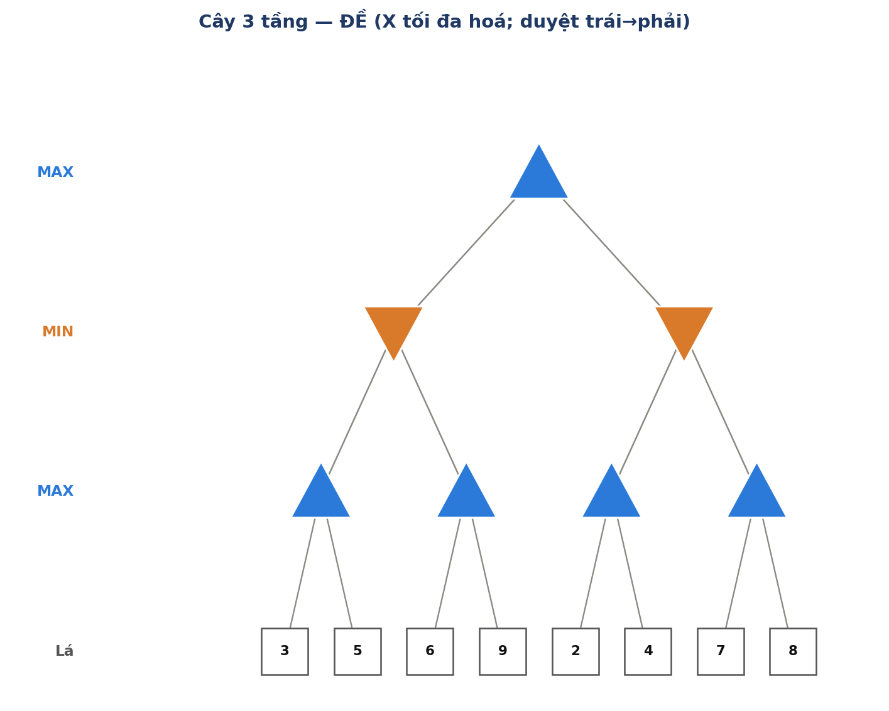
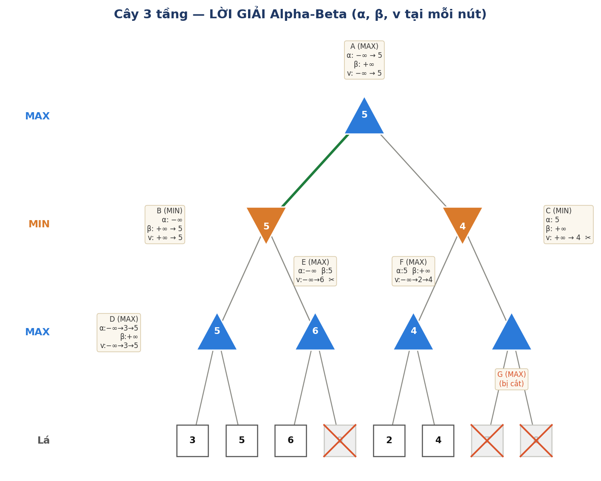

Cây có 3 tầng quyết định: gốc MAX → tầng MIN → tầng MAX → lá.
- Gốc A (MAX); hai con B, C (MIN).
- B có hai con MAX: D (lá 3, 5) và E (lá 6, 9).
- C có hai con MAX: F (lá 2, 4) và G (lá 7, 8).
Duyệt sâu trước, từ trái sang phải. Kết quả và diễn tiến α/β/v ở từng nút:


Học thuộc phần này là làm được mọi bài.
- v cùng tính cách với nút: nút MAX thì v lấy max, nút MIN thì v lấy min các con đã xét.
- Khởi tạo: nút MAX bắt đầu v = −∞ (rồi chỉ đi lên); nút MIN bắt đầu v = +∞ (rồi chỉ đi xuống).
- Sau khi xét xong (hoặc bị cắt), v chính là giá trị nút trả về cho cha.
- α = giá trị tốt nhất mà MAX đã chắc chắn có (cận dưới). β = giá trị tốt nhất mà MIN đã chắc chắn có (cận trên).
- Mỗi con kế thừa cửa sổ [α, β] hiện thời của cha.
- Cập nhật — luật vàng: "MAX nuôi α, MIN nuôi β".
- Ở nút MAX: sau mỗi con, α ← max(α, v). (nút MAX không đụng vào β, chỉ mang xuống)
- Ở nút MIN: sau mỗi con, β ← min(β, v). (nút MIN không đụng vào α, chỉ mang xuống)
- Ở gốc luôn khởi đầu α = −∞, β = +∞. Cửa sổ [α, β] chỉ hẹp dần khi đi sâu, không bao giờ rộng ra.
- Nút MAX: nếu v ≥ β → cắt các con còn lại (gọi là β-cut).
- Nút MIN: nếu v ≤ α → cắt các con còn lại (gọi là α-cut).
- Gộp chung một câu: cắt khi α ≥ β (cửa sổ rỗng).
- Trực giác: nút hiện tại vừa "vượt rào" mà tổ tiên phía đối lập đã đặt → tổ tiên chắc chắn không chọn nhánh này → xét tiếp là vô ích.
| Lấy v bằng | Cập nhật ngưỡng nào | Cắt khi | |
|---|---|---|---|
| Nút MAX ▲ | max (từ −∞) | α ← max(α, v) | v ≥ β |
| Nút MIN ▼ | min (từ +∞) | β ← min(β, v) | v ≤ α |
Khởi tạo α = −∞, β = +∞, v = −∞. Đi xuống con trái B.
Kế thừa α = −∞, β = +∞; khởi tạo v = +∞. Đi xuống con trái D.
Kế thừa α = −∞, β = +∞; v = −∞.
- Lá 3: v = max(−∞, 3) = 3. v ≥ β? không. Cập nhật α = max(−∞, 3) = 3.
- Lá 5: v = max(3, 5) = 5. v ≥ β? không. Cập nhật α = 5.
- Hết con → D = 5, trả về B.
v = min(+∞, 5) = 5. Kiểm tra v ≤ α(−∞)? không. Cập nhật β = min(+∞, 5) = 5. Đi xuống con thứ hai E.
Kế thừa α = −∞, β = 5 (β mới của B); v = −∞.
- Lá 6: v = max(−∞, 6) = 6. Kiểm tra v ≥ β? 6 ≥ 5 → ĐÚNG → β-cut: cắt lá 9. E trả về 6.
E là MAX nên E ≥ 6; nhưng B (MIN, cha) đã chắc chắn có 5 từ D, nên B sẽ không chọn E (E còn lớn hơn) → khỏi xét lá 9.
v = min(5, 6) = 5. Hết con → B = 5, trả về A.
v = max(−∞, 5) = 5. v ≥ β? không. Cập nhật α = max(−∞, 5) = 5. Đi xuống con phải C.
Kế thừa α = 5, β = +∞; v = +∞. Đi xuống con trái F.
Kế thừa α = 5, β = +∞; v = −∞.
- Lá 2: v = max(−∞, 2) = 2. v ≥ β? không. α = max(5, 2) = 5 (giữ nguyên).
- Lá 4: v = max(2, 4) = 4. v ≥ β? không. α = 5.
- Hết con → F = 4, trả về C.
v = min(+∞, 4) = 4. Kiểm tra v ≤ α? 4 ≤ 5 → ĐÚNG → α-cut: cắt cả nút G (lá 7 và 8). C trả về 4.
C là MIN nên C ≤ 4; nhưng A (MAX, cha) đã chắc chắn có 5 từ B, nên A sẽ không chọn C → khỏi xét G.
v = max(5, 4) = 5. Hết con → A = 5. Nước đi tốt nhất của MAX là sang B.
| Bước | Nút (loại) | Kế thừa (α, β) | Xét | v sau đó | Cập nhật | Ghi chú |
|---|---|---|---|---|---|---|
| 1 | A (MAX) | (−∞, +∞) | khởi tạo | −∞ | — | xuống B |
| 2 | B (MIN) | (−∞, +∞) | khởi tạo | +∞ | — | xuống D |
| 3 | D (MAX) | (−∞, +∞) | lá 3 | 3 | α=3 | |
| 4 | D (MAX) | (3, +∞) | lá 5 | 5 | α=5 | D = 5 → về B |
| 5 | B (MIN) | (−∞, +∞) | nhận D=5 | 5 | β=5 | xuống E |
| 6 | E (MAX) | (−∞, 5) | lá 6 | 6 | — | 6 ≥ β=5 → cắt lá 9; E=6 |
| 7 | B (MIN) | (−∞, 5) | nhận E=6 | 5 | β=5 | B = 5 → về A |
| 8 | A (MAX) | (−∞, +∞) | nhận B=5 | 5 | α=5 | xuống C |
| 9 | C (MIN) | (5, +∞) | khởi tạo | +∞ | — | xuống F |
| 10 | F (MAX) | (5, +∞) | lá 2 | 2 | α=5 | |
| 11 | F (MAX) | (5, +∞) | lá 4 | 4 | α=5 | F = 4 → về C |
| 12 | C (MIN) | (5, +∞) | nhận F=4 | 4 | — | 4 ≤ α=5 → cắt cả G (lá 7, 8); C=4 |
| 13 | A (MAX) | (5, +∞) | nhận C=4 | 5 | α=5 | A = 5; nước tốt nhất: B |
- Giá trị gốc = 5, MAX chọn nhánh B.
- Alpha-Beta chỉ xét 5 lá (3, 5, 6, 2, 4), cắt 3 lá (9, và 7–8 của G).
- Ví dụ này minh họa cả hai kiểu cắt:
- β-cut tại nút MAX E (v ≥ β) — cắt 1 lá.
- α-cut tại nút MIN C (v ≤ α) — cắt cả một cây con (2 lá).
- Đối chiếu với slide 16 (cây 2 tầng): quy luật y hệt, chỉ khác là ở cây 3 tầng, ngưỡng α được nút MAX ở tầng dưới cùng "nuôi lớn" trước khi trả lên, còn β được nút MIN ở giữa cập nhật — nhờ đó việc cắt lan tỏa mạnh hơn.
ab3_problem.png để giao cho sinh viên tự làm.